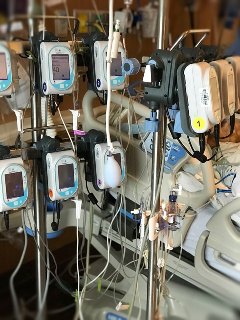

How quickly things can change …

Good morning, afternoon, or evening (whenever this message is reaching you).
I wanted to give you a little site and life update. Currently, I am silently sitting beside my dad as he drifts in and out of sleep due recovering from his quadruple bypass surgery.
Everything happened so quickly once I received the phone call notifying me of his heart attack. I suddenly found myself 1,437 miles away from my home… dazed, yet ever so blessed to be holding my dad’s hand in mine as he recovers. I had hoped to reach out sooner with this email, but I haven’t had the time or energy to even open my computer.
With all of this going on, I am going to miss out on releasing a few recipes during this week and possibly the next. It all depends on how things go. I will be staying with dad in the hospital but also for whatever time is required since I will be his primary caretaker at home.
So please forgive me that I can’t hold up my obligation on nouveauraw as promised. Once I find my rhythm back here, I will get back on track and see what I can whip up in my dad’s kitchen to share with you. But first I need to give it an overhaul as I try to entice him into a healthier eating lifestyle.
In the meantime, keep leaving recipe comments and questions. I will answer them as time permits. I can’t express enough how much your support means. In the meantime, I will be dreaming up my next creations, knowing the excitement I get from sharing them with you.
blessings, amie sue
© AmieSue.com